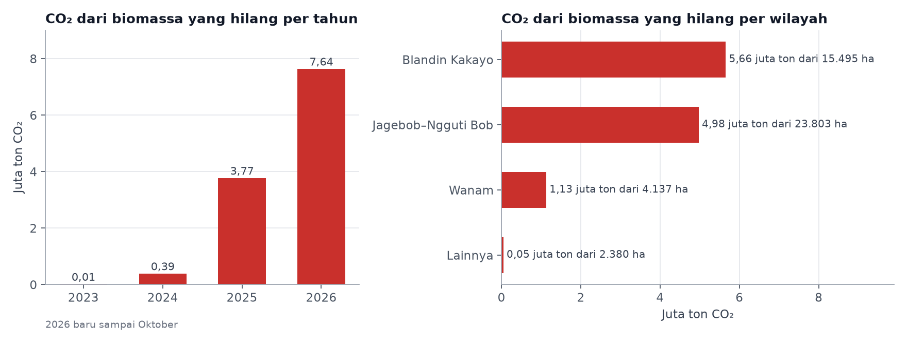
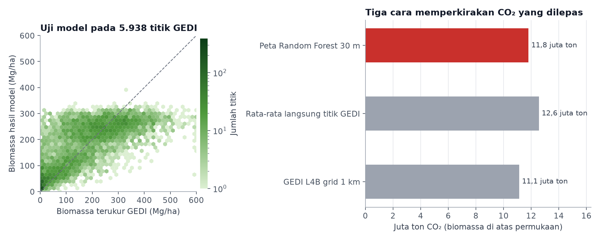

Karbon Hutan yang Hilang dari Pembukaan Lahan Food Estate Merauke, 2023–2026
Project ini melanjutkan project Pemantauan Pembukaan Lahan Food Estate Merauke, yang memetakan sekitar 45.800 hektare lahan yang dibuka sejak 2023.
Latar belakang
Pemetaan pembukaan lahan di Merauke memperlihatkan bahwa hampir 9 dari 10 hektare lahan yang dibuka untuk food estate sebelumnya berupa hutan. Hutan menyimpan karbon di batang, cabang, daun, dan akar pohonnya. Ketika hutan ditebang dan dibersihkan, sebagian besar karbon itu terlepas ke atmosfer sebagai CO₂ dan ikut memperparah perubahan iklim. Namun jumlah karbon di setiap hutan tidak sama. Hutan rapat dengan pohon setinggi 25 meter menyimpan karbon jauh lebih banyak daripada savana dengan pohon yang jarang. Karena itu, dampak pembukaan lahan terhadap iklim tidak cukup dilihat dari luasnya saja, tetapi juga dari seberapa banyak karbon yang tersimpan di lahan itu sebelum dibuka.
Project ini menghitung berapa banyak biomassa dan karbon yang tersimpan di hutan sebelum dibuka, berapa CO₂ yang dilepas ketika hutan itu hilang, dan di wilayah mana kehilangan terbesarnya terjadi. Pengukurannya memakai GEDI, sebuah instrumen LiDAR di Stasiun Luar Angkasa Internasional yang menembakkan sinar laser ke permukaan bumi untuk mengukur tinggi dan struktur hutan.
Data yang digunakan
| Data | Format Data | Jenis Data | Sumber |
|---|---|---|---|
| GEDI L4A, biomassa di atas permukaan per titik (diameter ± 25 m), April 2019–Desember 2022 | Raster | Sekunder | NASA dan University of Maryland, melalui Google Earth Engine |
| GEDI L2A, tinggi tajuk per titik, April 2019–Desember 2022 | Raster | Sekunder | NASA dan University of Maryland, melalui Google Earth Engine |
| GEDI L4B, rata-rata biomassa grid 1 km | Raster | Sekunder | NASA ORNL DAAC, melalui Google Earth Engine |
| Citra Sentinel-2 Level-2A dan Sentinel-1 GRD, Juli–Oktober 2022 | Raster | Sekunder | ESA Copernicus, melalui Google Earth Engine |
| Copernicus DEM GLO-30 | Raster | Sekunder | ESA Copernicus |
| Peta pembukaan lahan Merauke per triwulan, 2023–2026 | Raster | Primer | Project Food Estate Merauke |
| Kawasan hutan, areal pelepasan, dan PPKH | Vektor | Sekunder | Geoportal Kementerian Kehutanan |
Metode
GEDI tidak memotret seluruh permukaan seperti citra satelit biasa. Instrumen ini merekam titik-titik pengukuran berdiameter sekitar 25 meter yang tersusun berjajar di sepanjang lintasan orbitnya. Di setiap titik, pantulan laser dari puncak pohon sampai ke tanah diubah menjadi tinggi tajuk dan perkiraan biomassa di atas permukaan, dalam satuan megagram atau ton per hektare. Hanya titik dengan kualitas baik yang dipakai, yaitu titik yang lolos penanda kualitas GEDI dan memiliki sensitivitas paling sedikit 0,95, agar laser benar-benar menembus tajuk sampai ke tanah.
Semua pembukaan lahan di Merauke terjadi sejak 2023, sehingga titik GEDI yang direkam pada 2019–2022 di lahan yang kemudian dibuka merekam kondisi hutan sebelum ditebang. Titik-titik ini menjadi sampel langsung dari hutan yang hilang.
Karena titik GEDI tersebar dan tidak menutupi seluruh lahan, celah di antaranya diisi dengan model Random Forest. Model ini mempelajari hubungan antara biomassa di titik GEDI dengan warna dan indeks vegetasi Sentinel-2, pantulan radar Sentinel-1, serta elevasi dan kemiringan lereng pada musim kemarau 2022. Pelatihan memakai titik GEDI di sekitar seluruh klaster pembukaan, dan 20% titik disisihkan untuk menguji model. Hasilnya adalah peta biomassa 30 m untuk kondisi sebelum lahan dibuka.
Biomassa di setiap piksel yang dibuka lalu dijumlahkan. Karbon dihitung sebagai 47% dari biomassa kering, dan setiap ton karbon setara dengan 3,67 ton CO₂ ketika terlepas ke atmosfer. Biomassa akar dihitung terpisah dengan rasio akar terhadap tajuk 0,20–0,37 dari IPCC, karena nilainya tidak diukur langsung oleh GEDI. Masker pembukaan, waktu pembukaan, klaster, dan status kawasan mengikuti project Food Estate Merauke, sehingga luas dan angkanya bisa dibandingkan langsung.
Sebagai pembanding, CO₂ juga dihitung dengan dua cara lain. Cara pertama memakai rata-rata langsung semua titik GEDI di lahan yang dibuka, tanpa model. Cara kedua memakai GEDI L4B, yaitu rata-rata biomassa dalam grid 1 km yang diterbitkan NASA.
Hasil
Sebelum dibuka, lahan seluas sekitar 45.800 hektare itu menyimpan sekitar 6,9 juta ton biomassa di atas permukaan, atau rata-rata 150 ton per hektare. Jumlah ini setara dengan 3,2 juta ton karbon, yang menjadi 11,8 juta ton CO₂ ketika terlepas ke atmosfer. Jika biomassa akar ikut dihitung, totalnya bertambah 2,4–4,4 juta ton CO₂. Angka 11,8 juta ton kira-kira sama dengan emisi tahunan 2,6 juta mobil penumpang.
Titik GEDI juga memperlihatkan seperti apa hutan yang hilang. Tinggi tajuk di lahan yang kemudian dibuka rata-rata sekitar 21 meter, dan seperempat titiknya memiliki tajuk lebih dari 26 meter. Hutan seperti ini jauh dari gambaran savana terbuka yang sering dipakai untuk menggambarkan Merauke.

Tahun pembukaan mengikuti triwulan pertama lahan terlihat terbuka. Angka 2026 baru mencakup Januari–Oktober.
Kehilangan karbon melonjak seiring cepatnya pembukaan lahan. Pada 2023 dan 2024 jumlahnya masih di bawah 0,4 juta ton CO₂ per tahun, lalu naik menjadi 3,8 juta ton pada 2025. Dalam sepuluh bulan pertama 2026, CO₂ yang dilepas sudah mencapai 7,6 juta ton, dua kali lipat tahun sebelumnya. Pembukaan pada 2023 hanya melepas sedikit CO₂ karena sebagian besar berada di lahan dengan biomassa rendah, sekitar 10 ton per hektare.
Wilayah sekitar Blandin Kakayo, di utara Jagebob, menyumbang CO₂ terbesar, yaitu 5,7 juta ton, walaupun luas pembukaannya lebih kecil daripada Jagebob dan Ngguti Bob. Hutan di wilayah ini paling rapat, dengan biomassa rata-rata sekitar 212 ton per hektare. Sebaliknya, pembukaan di Jagebob dan Ngguti Bob lebih banyak mengenai hutan yang lebih terbuka, sehingga 23.800 hektare pembukaan di sana melepas sekitar 5,0 juta ton CO₂.
Peta di bawah membandingkan kondisi sebelum dan sesudah pembukaan. Sisi kiri memperlihatkan citra Sentinel-2 tahun 2022 dengan biomassa hutan hasil model, sedangkan sisi kanan memperlihatkan citra tahun 2026 dengan CO₂ yang dilepas di setiap blok yang dibuka. Geser garis putih di tengah peta untuk membandingkan keduanya.
Biomassa dan CO₂ ditampilkan dalam sel sekitar 120 m. Biomassa hanya dihitung di sekitar klaster pembukaan. Nyalakan lapisan titik GEDI lalu klik salah satu titik untuk melihat tinggi tajuk dan biomassanya. Setelah peta diklik, gulir untuk memperbesar atau memperkecil.
Ekosistem dan status kawasan
| Tutupan lahan sebelum dibuka | Luas (ha) | Biomassa rata-rata (Mg/ha) | CO₂ (juta ton) |
|---|---|---|---|
| Hutan dan pepohonan | 40.464 | 167 | 11,65 |
| Savana dan padang rumput | 2.270 | 22 | 0,09 |
| Rawa dan lahan basah | 2.483 | 14 | 0,06 |
| Mangrove | 51 | 111 | 0,01 |
| Lahan pertanian lama | 534 | 8 | 0,01 |
Tutupan lahan sebelum dibuka diambil dari ESA WorldCover 2021, sama dengan project Food Estate Merauke. CO₂ hanya dari biomassa di atas permukaan.
Hampir seluruh CO₂, sekitar 99%, berasal dari hutan. Savana, rawa, dan lahan pertanian lama yang ikut dibuka hanya menyimpan 8–22 ton biomassa per hektare, sehingga sumbangannya sangat kecil.
| Status kawasan | Luas (ha) | Biomassa rata-rata (Mg/ha) | CO₂ (juta ton) |
|---|---|---|---|
| APL hasil pelepasan kawasan hutan | 26.229 | 170 | 7,68 |
| APL lainnya | 16.325 | 139 | 3,91 |
| Hutan produksi yang dapat dikonversi | 975 | 80 | 0,14 |
| Hutan produksi tetap dan terbatas | 367 | 117 | 0,07 |
| Kawasan konservasi | 1.551 | 7 | 0,02 |
| Hutan lindung | 368 | 7 | < 0,01 |
APL adalah Areal Penggunaan Lain, yaitu lahan di luar kawasan hutan. Fungsi kawasan hutan memakai peta Juni 2026 berskala 1:250.000.
Sekitar dua pertiga CO₂ berasal dari APL hasil pelepasan kawasan hutan. Biomassa di areal ini paling tinggi, sekitar 170 ton per hektare, artinya kawasan yang dilepaskan untuk food estate sebagian besar masih berupa hutan rapat. Pembukaan di kawasan konservasi dan hutan lindung hanya melepas sedikit CO₂ karena biomassanya sekitar 7 ton per hektare. Angka ini menguatkan temuan project Food Estate Merauke, bahwa perubahan di dua kawasan itu lebih banyak berupa rawa yang mengering atau terbakar, bukan hutan yang ditebang.
Seberapa bisa dipercaya angka ini?

Untuk menguji ketepatannya, hasil model dibandingkan dengan 5.938 titik GEDI yang sengaja tidak dipakai saat melatih model. Di satu titik tertentu, perkiraan model memang bisa meleset cukup jauh, rata-rata sekitar 93 ton per hektare. Hal ini wajar, karena satu titik GEDI hanya mengukur lingkaran selebar 25 meter, sedangkan model menebak biomassa dari warna dan pantulan citra satelit. Model juga cenderung memberi angka terlalu rendah untuk hutan yang sangat rapat dan terlalu tinggi untuk lahan yang pohonnya jarang. Namun ketika semua titik dijumlahkan, perkiraan yang terlalu tinggi dan terlalu rendah saling menutupi, sehingga selisih rata-ratanya kurang dari 1 ton per hektare. Artinya, model ini cukup bisa dipercaya untuk menghitung total biomassa di seluruh lahan yang dibuka.
Hasil ini juga dicek dengan dua cara lain. Jika langsung memakai rata-rata 8.577 titik GEDI di lahan yang dibuka, tanpa model, CO₂ yang dilepas sekitar 12,6 juta ton. Jika memakai peta biomassa GEDI L4B dari NASA, hasilnya sekitar 11,1 juta ton. Ketiga cara memberi angka yang tidak jauh berbeda, sehingga CO₂ dari biomassa pohon yang hilang kemungkinan besar berada di kisaran 11–13 juta ton.
Kesimpulan
Pembukaan lahan food estate di Merauke sejak 2023 telah menghilangkan sekitar 6,9 juta ton biomassa hutan dan melepas sekitar 11–13 juta ton CO₂ dari biomassa di atas permukaan. Jika akar ikut dihitung, jumlahnya menjadi sekitar 14–16 juta ton. Kehilangan ini tidak tersebar merata. Hampir semuanya berasal dari hutan, sebagian besar di areal yang sudah dilepaskan dari kawasan hutan, dan wilayah sekitar Blandin Kakayo menjadi penyumbang terbesar karena hutannya paling rapat.
Perkiraan ini baru mencakup biomassa pohon. Emisi dari tanah, gambut dangkal, kayu mati, dan kebakaran saat lahan dibersihkan belum dihitung, begitu pula karbon yang mungkin kembali tersimpan di tanaman tebu atau padi. Titik GEDI sebelum 2023 juga tidak merata, sehingga biomassa di beberapa blok kecil sepenuhnya bergantung pada model. Dengan laju pembukaan yang masih terus naik pada 2026, angka kehilangan karbon ini kemungkinan besar akan bertambah, dan perhitungan yang sama bisa diperbarui setiap kali peta pembukaan lahan diperbarui.
← View other projects